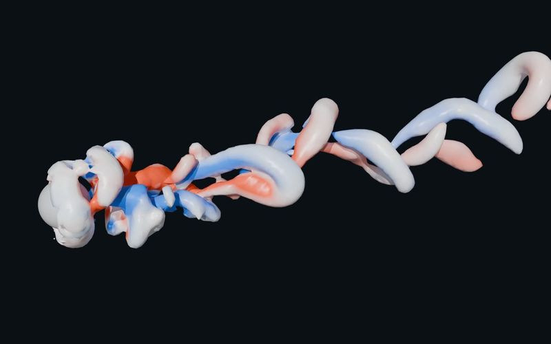
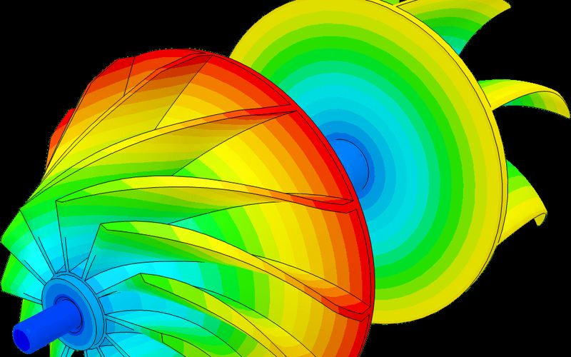
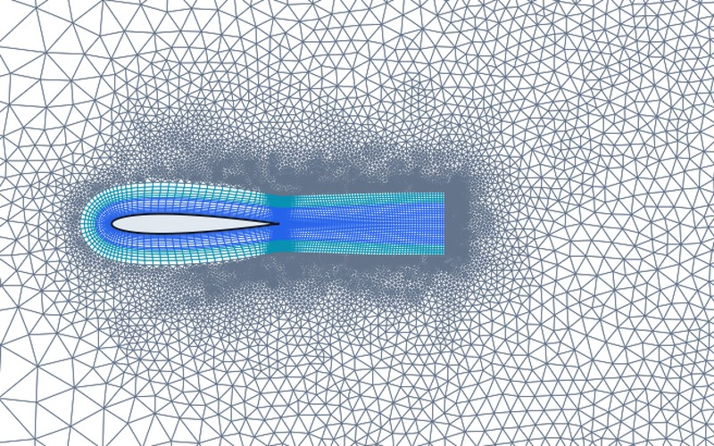
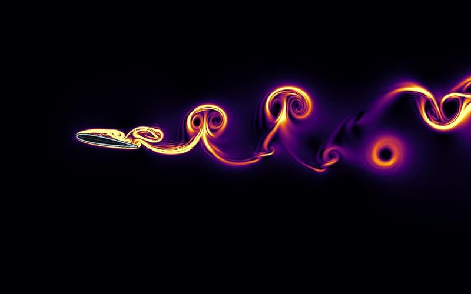
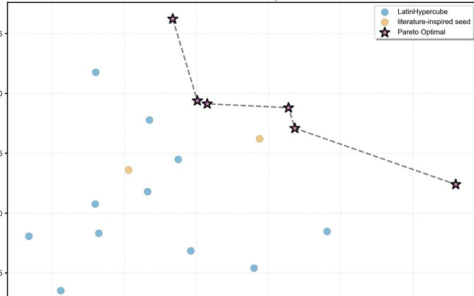
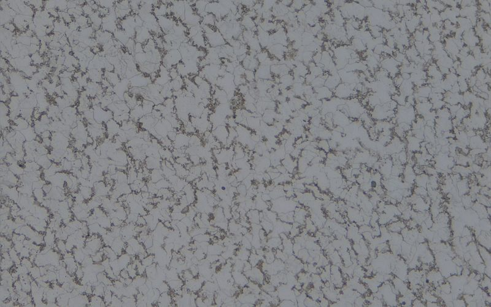

Abhishek
Kuntal
CFD and thermal-simulation engineer. Four years of gas-turbine CFD at Honeywell; now finishing an M.Sc. in Materials Science at TUM, with a thesis on tidal-energy hydrofoil kites.
Open to full-time roles in Munich from December 2026.
In the background: flow separating from a NACA 0012 hydrofoil at 14°, drawn as a finite-time Lyapunov exponent field by my own GPU lattice-Boltzmann code. How it works
- Years of industrial CFD
- 4+
- Turbomachinery, cooling and reacting flows at Honeywell, 2019–2023
- Less analysis time
- 26%
- Python/VBA post-processing pipeline replacing manual steps
- Saved per year
- $33K
- Recurring saving from the same automation
- Particle-steps per second
- 24.1 M
- My GPU SPH solver on a laptop; DualSPHysics reaches 20.4 M on the same case and GPU
Selected work
All 16 projects
Own GPU solver · v1.2.3 · 2026
AuraFlow — GPU SPH solver for violent free-surface & bluff-body flows
Weakly compressible SPH on NVIDIA Warp (δ-SPH in 2D, Riemann SPH in 3D): SPHERIC Test 2 (5/5 gates), Re 100 cylinder (2/2), NACA 0012 (4/4 at α = 0°, 2°) and Lobovsky 2014 dam break; 24.1 M particle-steps/s on a laptop GPU, with a Transolver-style field surrogate and SAC RL control.

Honeywell · 2019–2023
Turbomachinery CFD & automation
RANS stage simulations with mesh morphing and uncertainty quantification; Python pipelines that cut analysis time by 26% and save $33K a year.

Own CFD toolchain · 2026
Physics-informed 2D/3D CFD mesher & solver-in-the-loop adaptation
Automated y⁺ boundary-layer sizing, C-grid wake topology, and Fluent-in-the-loop metric adaptation via gmsh and MMG, cross-checked in SU2: DFG 2D-1 cylinder CD within −0.009% of reference; an open turbulent drag gap traced to the mesh; 159 automated tests.

Own GPU solver · 2026
Real-time hydrofoil wakes with lattice Boltzmann + FTLE
C++/CUDA/Qt desktop app: D2Q9 LES around a NACA 0012 with live Lagrangian coherent structures. Re 1000 polar against Kurtulus (2015): Cd(0°) 0.125 vs 0.12; shedding from 8° at chord-based St 0.878 vs 0.876.

Self-directed · 2026
CALPHAD Ni-superalloy screening & four-stage validation
Six-element (Al–Cr–Co–Mo–W–Ti) pycalphad pipeline on mc_ni v2.036 benchmarked against 50 primary measurements from six sources; GP surrogate scored against a linear baseline (10 × 5-fold CV) before constrained Bayesian optimisation.

TUM lab · grade 1.0
Weld HAZ: Gleeble 3500 experiments & quantitative model audit
Single-cycle, 8-peak multi-cycle and heat-treated HAZ specimens of S355J2C+C on a Gleeble 3500 (t8/5 = 6.90 s; 232.1 ± 8.4, 208.4 ± 15.4 and 164.3 ± 2.4 HV1); a Kirkaldy–Li model audit and a model-free Gladman–Pickering hardness bound.
What I work with
Simulation
- RANS turbomachinery: k-ω SST, sliding mesh, mixing plane
- Conjugate heat transfer and thermal stress
- Multiphase, reacting and particle-laden flow
- Structured & metric-adaptive meshing (ICEM CFD, TurboGrid, gmsh, MMG2D/3D)
- Own GPU solvers: SPH (NVIDIA Warp), LBM (CUDA)
Automation and data
- Python and VBA pipelines from solver output to reports
- DOE, response surfaces, multi-objective optimisation
- Surrogate models with calibrated uncertainty
- Reinforcement learning for flow control
- C++20, CUDA, Qt, PyTorch
Materials and experiment
- Gleeble 3500 thermal cycling, Vickers hardness (HV1)
- Optical and scanning electron microscopy
- Hot-wire anemometry with LabVIEW acquisition
- CALPHAD with pycalphad
- Spray-pyrolysis thin films